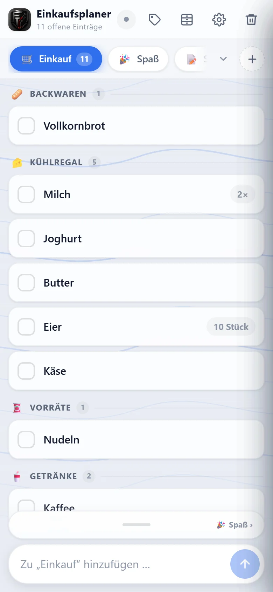
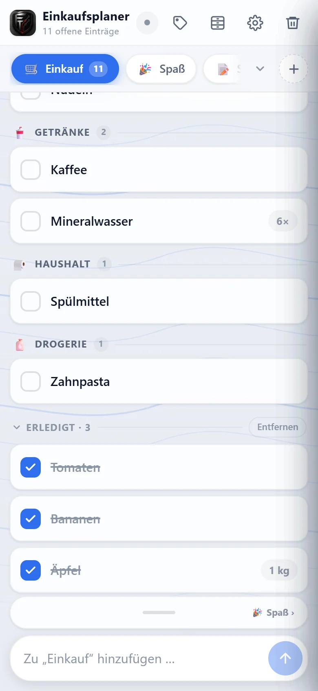
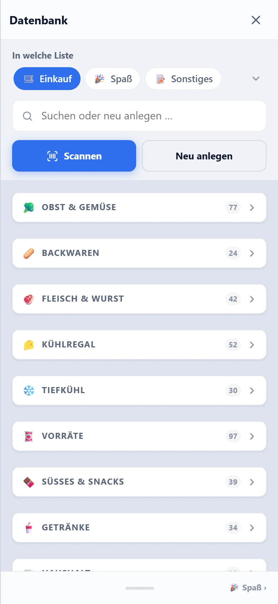
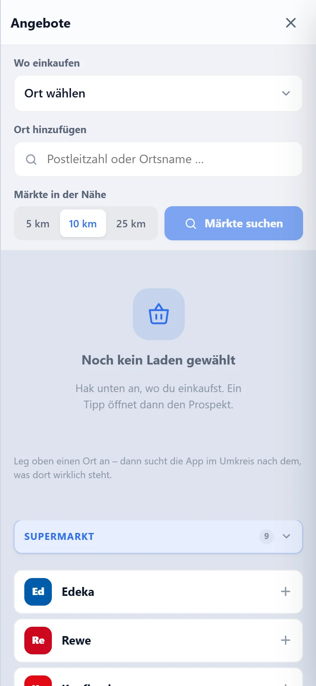
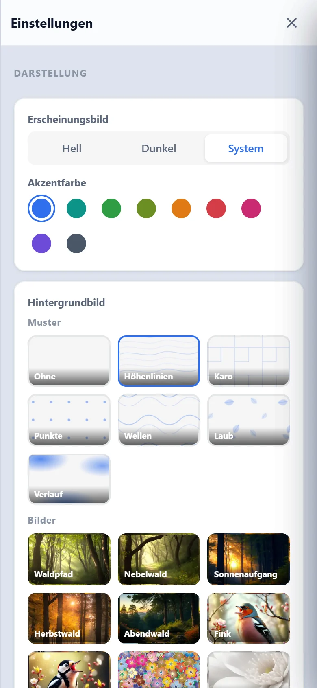
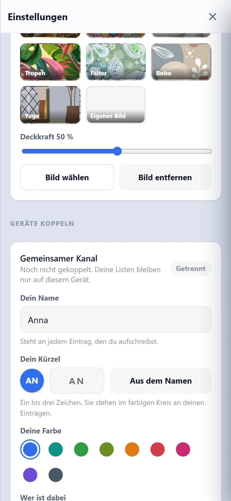
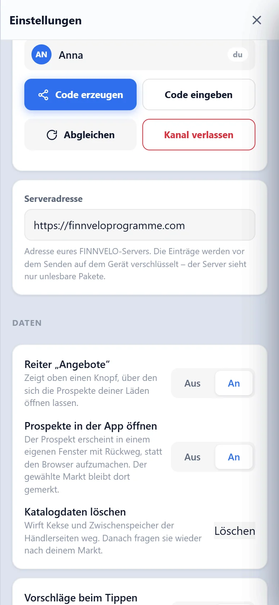
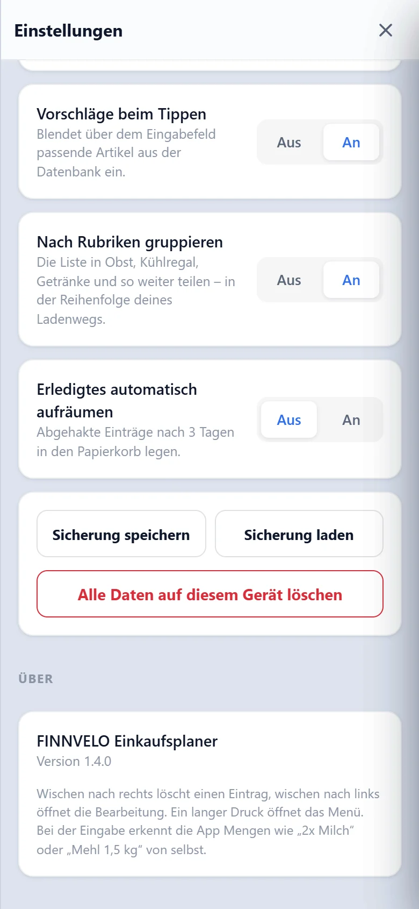

Einkaufen · Gemeinsam · Verschlüsselt
Finnvelo Einkaufsplaner
In EntwicklungDer Finnvelo Einkaufsplaner ist eine Einkaufsliste für Android, die mitdenkt: Er kennt rund 1.060 Lebensmittel und Haushaltsartikel, sortiert Einträge nach dem Weg durch den Laden und gleicht gemeinsame Listen verschlüsselt zwischen mehreren Handys ab – ohne Konto und ohne Anmeldung.
Beschreibung
Listen liegen als Reiter nebeneinander – Wocheneinkauf, Baumarkt, Getränke –, jede mit eigenem Namen, Symbol und eigener Farbe. Beim Tippen schlägt die App passende Artikel vor, auch bei ungenauer Schreibweise: „Kartofel“ findet die Kartoffeln. Mengen erkennt sie von selbst – aus „2x Milch“ oder „Mehl 1,5 kg“ werden Artikel und Menge, und eine kopierte Liste lässt sich am Stück einfügen.
Jeder Eintrag landet automatisch in einer von vierzehn Rubriken – Milch im Kühlregal, Äpfel bei Obst & Gemüse –, und die Liste zeigt sie in der Reihenfolge deines Ladenwegs. Im Einkaufsmodus werden die Zeilen groß, ein Balken zeigt, wie viel schon im Wagen liegt, und Abgehaktes verschwindet sofort.
Geteilt wird über einen Code aus sechs Zeichen. Auf dem ersten Gerät erzeugen, auf dem zweiten eintippen – fertig. Der Code gilt 15 Minuten und lässt sich von bis zu fünf Geräten einlösen. Danach gleichen sich die Listen im Hintergrund ab, und ein farbiges Kürzel zeigt, wer welchen Eintrag aufgeschrieben hat.
Was dabei übertragen wird, ist bereits auf dem Gerät verschlüsselt (AES-256-GCM). Der Server sieht nur unlesbare Daten – keine Konten, keine Namen, keine Inhalte. Ohne Netz arbeitet die App normal weiter und gleicht ab, sobald wieder eine Verbindung besteht.
Neben dem Einkauf führst du beliebig viele weitere Listen – etwa für Geschenkideen, Renovieren oder Sparen. Bei solchen Listen lässt sich abschalten, dass die Einträge in der Artikel-Datenbank landen. Jede Liste hat ihr eigenes Menü: einkaufen, bearbeiten, verschieben, Erledigtes entfernen oder löschen. Ein Wisch nach rechts löscht einen Eintrag, ein Wisch nach links öffnet die Bearbeitung, ein langer Druck das Menü.
Die Artikel-Datenbank merkt sich jeden Artikel mit Rubrik, üblicher Menge und Barcode. Ein unbekannter Barcode lässt sich im Netz nachschlagen, Sorten ordnest du einem Oberbegriff unter – etwa „Kartoffeln festkochend“ unter „Kartoffeln“. Im Reiter „Angebote“ hinterlegst du Orte per Postleitzahl, findest Märkte im Umkreis von 5, 10 oder 25 Kilometern und öffnest mit einem Tipp deren Prospekt – auf Wunsch direkt in der App.
Rund 1.060 Artikel ab Werk
Lebensmittel und Haushaltssachen, bereits nach Rubriken sortiert – Vorschläge ab dem zweiten Buchstaben.
Mengen von selbst
„2x Milch“, „Mehl 1,5 kg“ oder „Butter, Käse, Eier“ wird beim Tippen richtig zerlegt.
Sortiert nach Ladenweg
Vierzehn Rubriken und beliebig viele eigene – in der Reihenfolge, in der du durch den Markt gehst.
Einkaufsmodus
Große Zeilen, Fortschrittsbalken und sofort verschwindende Häkchen – gemacht für den Einkauf mit einer Hand.
Koppeln per Code
Sechs Zeichen, 15 Minuten gültig, bis zu fünf Geräte – verschlüsselt abgeglichen.
Papierkorb
Gelöschte Einträge und Listen stehen mit ihrer Restfrist im Papierkorb und lassen sich zurückholen.
Artikel-Datenbank mit Barcode
Jeder notierte Artikel wird mit Rubrik, üblicher Menge und – wenn gescannt – seinem Barcode gemerkt.
Angebote in deiner Nähe
Orte per Postleitzahl hinterlegen und mit einem Tipp die Angebotsseiten der Märkte öffnen.
Eigene Gestaltung
Hell oder dunkel, neun Akzentfarben und Hintergründe aus Mustern, Fotos oder einem eigenen Bild.
Mehrere Listen
Einkauf, Geschenkideen oder Renovieren – jede Liste mit eigenem Namen, Symbol und Farbe.
Wischen und Halten
Nach rechts wischen löscht, nach links bearbeitet, langes Drücken öffnet das Menü.
Erledigtes aufräumen
Abgehakte Einträge wandern auf Wunsch nach drei Tagen von selbst in den Papierkorb.
Oberfläche
Die folgenden Ansichten zeigen die App mit einem erfundenen Wocheneinkauf aus 14 Artikeln. Ein Klick auf ein Bild öffnet es groß.
Liste und Einkauf




Einstellungen




Einstellungen – das kannst du anpassen
Ein Überblick über alles, was sich in den Einstellungen und an den Listen anpassen lässt:
Darstellung
- ErscheinungsbildHell, dunkel oder wie das System.
- AkzentfarbeNeun Farben für Knöpfe und Hervorhebungen.
- HintergrundbildMuster wie Höhenlinien oder Wellen, Naturfotos oder ein eigenes Bild – mit einstellbarer Deckkraft.
Geräte koppeln
- Dein Name, Kürzel und FarbeStehen an jedem Eintrag, den du aufschreibst – das Kürzel auch automatisch aus dem Namen.
- Code erzeugen oder eingebenSechs Zeichen, 15 Minuten gültig, bis zu fünf Geräte.
- Abgleichen und Kanal verlassenVon Hand abgleichen oder die Kopplung lösen.
- ServeradresseAdresse des FINNVELO-Servers für den Abgleich.
Angebote
- Reiter „Angebote“Den Knopf für die Prospekte deiner Läden ein- oder ausblenden.
- Prospekte in der App öffnenIn einem eigenen Fenster mit Rückweg statt im Browser.
- Katalogdaten löschenKekse und Zwischenspeicher der Händlerseiten wegwerfen.
Liste und Daten
- Vorschläge beim TippenPassende Artikel aus der Datenbank über dem Eingabefeld.
- Nach Rubriken gruppierenDie Liste in der Reihenfolge deines Ladenwegs teilen; die Reihenfolge der Rubriken lässt sich umsortieren.
- Erledigtes automatisch aufräumenAbgehakte Einträge nach drei Tagen in den Papierkorb.
- Sicherung speichern und ladenAlle Listen als Datei sichern und wieder einlesen.
- Je ListeName, Symbol, Farbe und ob die Einträge in der Datenbank gemerkt werden.
Tutorial-Video
Ein Tutorial-Video wird hier ergänzt, sobald es bereitsteht.
Besondere Vorteile
- Kein Konto, keine Anmeldung, keine E-Mail-Adresse
- Ende-zu-Ende verschlüsselt – der Server sieht nichts Lesbares
- Rund 1.060 Artikel ab Werk, automatisch nach Rubriken sortiert
- Sicherung speichern und laden – die Daten gehören dir
- Funktioniert auch ohne Netz weiter
- Angebote der Märkte in deiner Nähe mit einem Tipp
- Liste in der Reihenfolge deines Ladenwegs
- Farbiges Kürzel zeigt, wer was aufgeschrieben hat
Zielgruppe
Für Haushalte, in denen mehr als eine Person einkauft – wenn einer im Laden steht und dem anderen zu Hause noch etwas einfällt. Und für alle, die einfach eine gut sortierte Einkaufsliste wollen, die nicht nach einem Konto fragt.
- Paare und Familien, die eine gemeinsame Liste auf mehreren Handys führen.
- Wer im Laden nicht hin- und herlaufen will, weil die Liste dem Ladenweg folgt.
- Wer Angebote im Blick behalten möchte, ohne für jeden Markt eine eigene App zu installieren.
Daten und Datenschutz
Listen, Artikel-Datenbank und Einstellungen liegen auf deinem Handy. Es gibt kein Konto, keine Anmeldung und keine E-Mail-Adresse. Sicherungen speicherst du selbst als Datei.
Ins Netz geht die App nur, wenn du es nutzt: Beim Koppeln werden die Einträge auf dem Gerät mit AES-256-GCM verschlüsselt und über finnveloprogramme.com abgeglichen – der Server sieht nur unlesbare Pakete. Für unbekannte Barcodes fragt die App bei Open Food Facts nach, für Märkte in der Nähe bei OpenStreetMap-Diensten, und Prospekte kommen direkt von den Seiten der Händler.
Download (Android-App)
Weitere Versionen und Patches
Platzhalter für spätere Updates, Patchdateien und ältere Versionen.
Download (PC-Version)
Programm herunterladen
Die Fassung für Windows. Sie läuft eigenständig, eine Installation ist nicht nötig.
PC-Version herunterladenHinweis
Windows meldet bei unbekannten Programmen einen Warnhinweis. Über „Weitere Informationen“ → „Trotzdem ausführen“ lässt sich der Start fortsetzen.